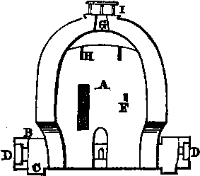

The Klin Oven Baking- Glazing, Etc
Description
This section is from the book "Porcelain Painting", by Elizabeth Lawrence Archer. Also available from Amazon: Porcelain Painting.
The Klin Oven Baking- Glazing, Etc
The amateur in porcelain painting generally sends his work to the pottery to be glazed and fired, and to have the gilded ornamentation burnished, but such a course is not absolutely necessary, as he can be supplied with a portable oven at a trifling cost, at the Metallurgist's, where his materials for painting are procured.
Porcelain ware, when ready for the oven, is placed in deep boxes, called seggars, which are made of fine clay and old pounded seggars, and are capable of sustaining the most intense heat without becoming fused.
The use of the seggar, is to protect the porcelain which it contains, from the direct influence, of the flame and smoke, and to equalize the distribution of heat. To prevent the adhesion of the porcelain, the bottom of the seggars are strewed with fine white sand.
Well made seggars, are fit for use about twenty times, after which they are broken up. Great care is required in distributing them throughout the oven, so as to ensure a just distribution of heat, and the simultaneous baking of the whole contents. The floor of the oven must be strewn with sand. The seggars being flat are piled up one on another, the upper answering as covers for those beneath. The whole pile of seggars is called a " bung;" between these piles spaces of about two or three inches must be left.
The following figure will explain the construction of a kiln.
A. Interior area of kiln; the diameter should be about 4-10ths of the height, and the wall about 2-10ths of the height in thickness.
B are air flues, equidistant in the circumference.
G are hearths proportionably (1-10th) below the base of the kiln. From these the heat is passed to the centre.
D are small openings for the admission of fuel; these have guard plates of iron.
E is the door; its sill 3-lOths above the ground; by this the seggars are introduced, after which it is walled up. P are square holes, provided with stoppers, by which trial pieces* are inserted within the kiln, to ascertain the progress of the baking. G is the chimney; its diameter at the top is one-third less than at the base. H are air holes, which by distributing the draughts equalize the temperature. I is a round plate supported on four pillars of the same, and placed over the opening of the chimney.
When the firing has sufficiently progressed, no more fuel is added, and when the smoke has entirely passed away from the hearths, the guards are closed, to exclude the transmission of air. The chimney and air holes are then closed likewise, and the contents of the kiln are allowed slowly to cool for about twenty-four hours.
Trial pieces are made of Staffordshire fire clay, the peculiar property of which is to change colour with every gradation of heat.
It may be observed, that it is necessary that the heat employed should be sufficient, to expel every particle of moisture, in the clay paste, so as to ensure the cohesion of the mass. This heat is 4717° Farenheit.
From forty to fifty hours are required in the baking of porcelain, as the heat must be very gradually increased.
The glaze employed in this art varies at different manufactories, but the commonest, is a compound of litharge of lead, and ground flints, in the proportion in weight of ten to four.
Flint in combination with lead, is fused and vitrified, at comparatively a low heat. To make this glaze reduce the component parts to a fine powder, and throw them into water until the consistence of cream is obtained. The mixture must be kept in agitation, so that the parts may not in any degree separate. The porcelain is then dipped into it, and when withdrawn it is moved rapidly about so as to ensure an equable flow over the surface, much in the manner that the photographer prepares his glass plate with collodion.
When the superfluous glaze has run off, the vessel is ready for the seggar.
Glazes are compounded to suit various materials, and therefore a preparatory trial is generally advisable.
The chief qualities in their order of fine porcelain are—
1. Density; 2. Whiteness; 3. Transparency; 4. Fineness of Glaze. The finest porcelain ware has a velvetty softness of appearance, and is not, as often supposed, lustrous and glittering.
Although these glazes may be obtained along with all the other materials at the manufacturers, a few recipes may be acceptable.
I. 27 parts of felspar, 18 of borax, 4 of Lynn sand, 3 of nitre, 3 of soda, and 3 of China Cornish clay.
II. Calcined flint 8 parts, ground porcelain 15, crystals of calcined gypsum 9.
III. Calcined flints 17 parts, ground porcelain 16, crystals of calcined gypsum 7.
IV. Calcined flints 11 parts, ground porcelain 18, crystals of calcined gypsum 9.
Continue to:
- prev: Painting, Process Of Applying The Colours To The Porcelain
- Table of Contents
- next: Painting On Porcelain, With Their Prices